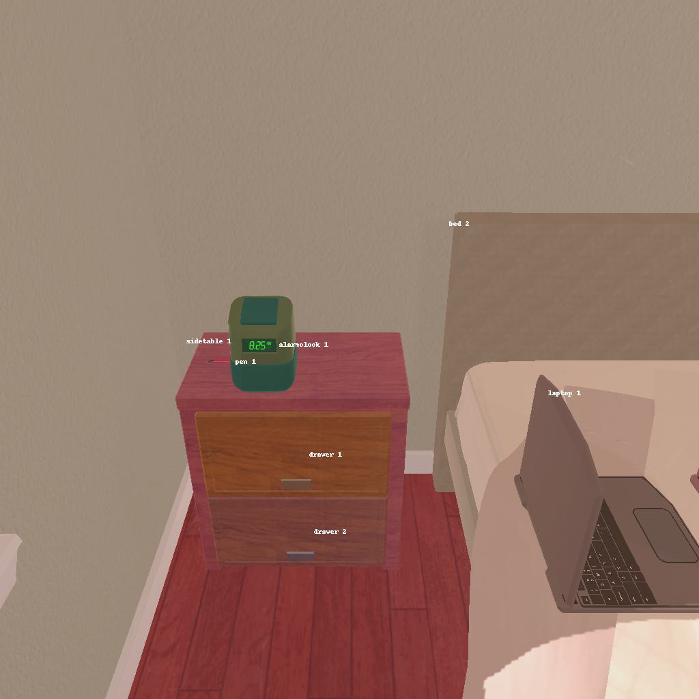

---------------------------------------------------------task: 2---------------------------------------------------------
--------------------------------------------------------------------------------------------------------------------------------------------------------------------
--------------------------------------------------------------------------------------------------------------------------------------------------------------------
Step:--------------------------------------------------------------------------18-------------------------------------------------------------------------------
----------------------------------------
VLM Prompt:
Image1:
**Instruction**
1. Analyze the provided image to identify all visible household objects, focusing on those relevant to the task description "look at pen under the desklamp."
2. Use the analysis of the image and the task hint "The agent must find an object of the desired type, locate and turn on a light source with the desired object in-hand." to answer the question: what is the most reasonable action in the choices for the task description "look at pen under the desklamp"?
4. Decide and write the answer using the template: The answer is: (i): , where i is the real number. If there is no desired object in the image, search every place based on **Initial Observation** to find the object. And if no one is exactly correct, choose a similar answer.
**Initial Observation**
You are in the middle of a room. Looking quickly around you, you can see bed (1-2), dresser (1), drawer (1-11), sidetable (1-2), desk (1), garbagecan (1), safe (1)
**Answer Choices**
(1): go to bed 1
(2): go to dresser 1
(3): go to bed 2
(4): go to sidetable 1
(5): go to drawer 2
(6): go to sidetable 2
(7): go to drawer 3
(8): go to drawer 4
(9): go to garbagecan 1
(10): go to drawer 5
(11): go to drawer 6
(12): go to drawer 7
(13): go to drawer 8
(14): go to drawer 9
(15): go to drawer 10
(16): go to drawer 11
(17): go to safe 1
(18): open drawer 1
(19): close drawer 1
(20): examine drawer 1
**Answer**
Let's think step by step by following the instructions.
----------------------------------------
----------------------------------------
Original Response:
From the image provided, we can see a pen on the sidetable labeled as "pen 1." There is also an alarm clock on the same sidetable, but no desklamp is visible. Based on the initial observation, there are multiple sidetables and drawers mentioned, but no specific desklamp is listed.
The task description specifies "look at pen under the desklamp," which implies that we need to find a pen and a desklamp. Since the pen is already visible on sidetable 1, the next step would be to locate a desklamp. The initial observation does not mention a desklamp, so we must search the room based on the given locations.
The most reasonable action would be to first take the visible pen and then look for a desklamp in the room. Since there is no action listed that directly states "take pen 1" or "find desklamp," we must choose an action that would logically lead to acquiring the pen and then searching for the desklamp.
The answer is: (4): go to sidetable 1, as it is the location of the pen, and from there, we can continue to look for the desklamp in the room.
----------------------------------------
----------------------------------------
>>> Refine Original VLM Response and Get Pure Action: go to sidetable 1, as it is the location of the pen, and from there, we can continue to look for the desklamp in the room
----------------------------------------
-----------------------------------------------------------------
Running time: 22.669620752334595 seconds
Total Money: 0.7980300000000001
-----------------------------------------------------------------
-----------------------------------------------------------------
Text Observation:Nothing happens.
-----------------------------------------------------------------
UNSUCCEED